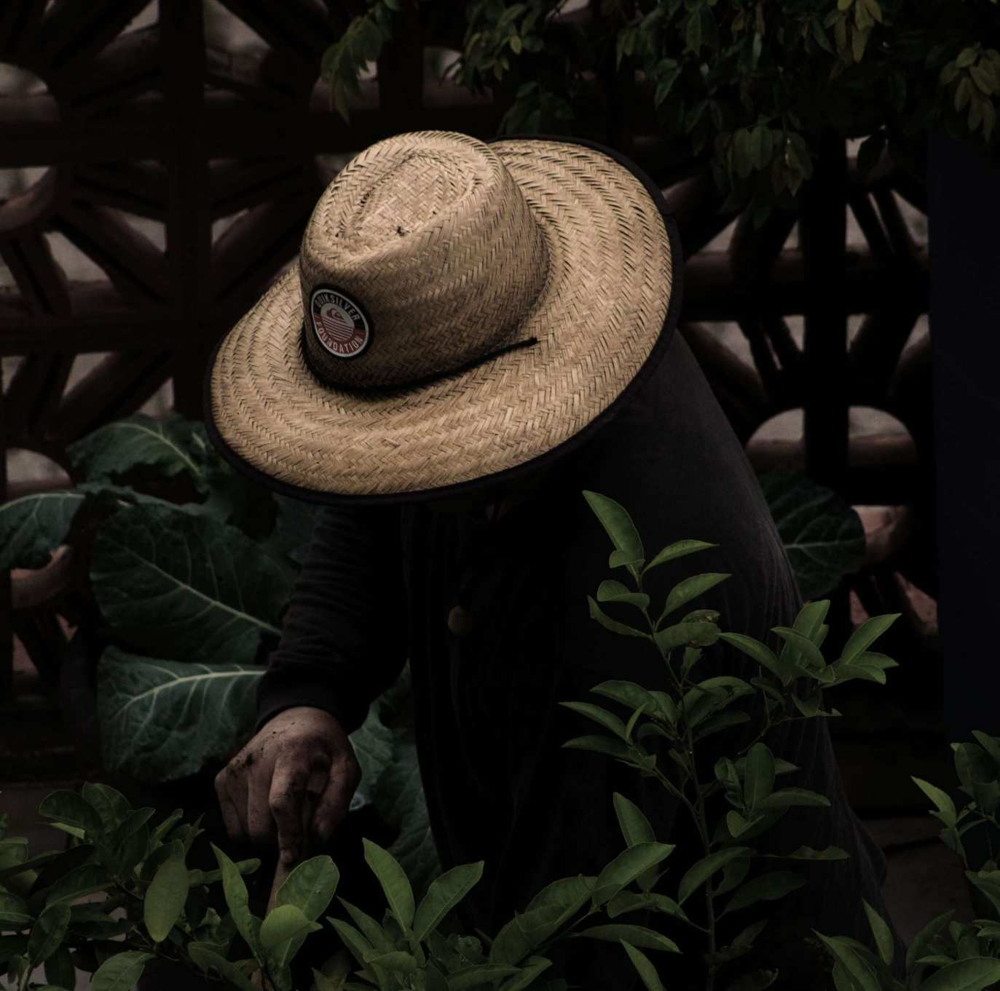
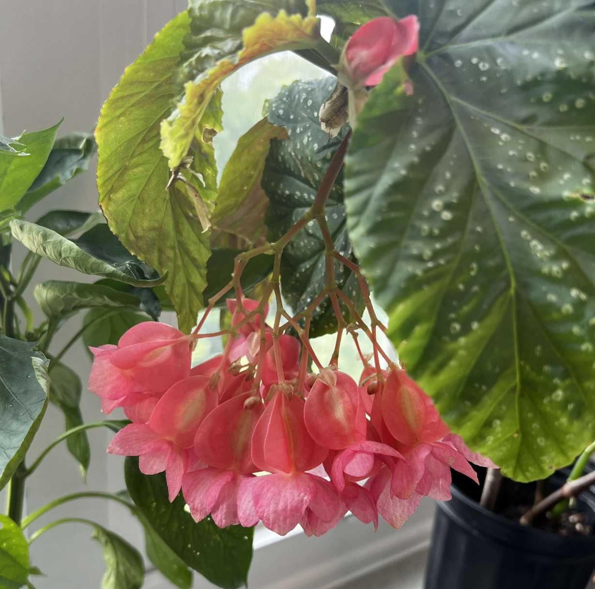
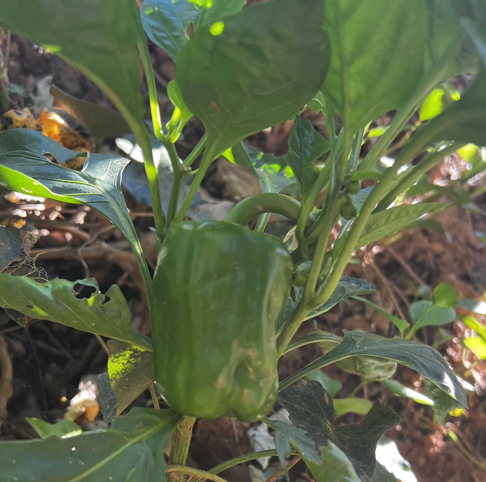
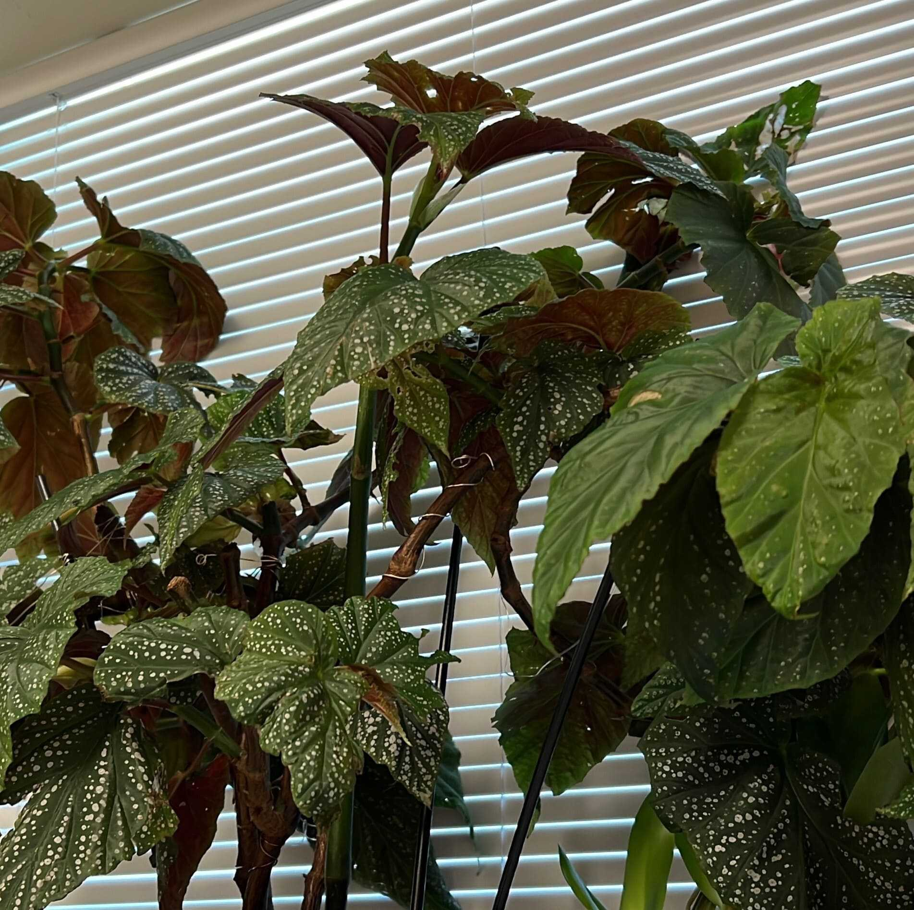
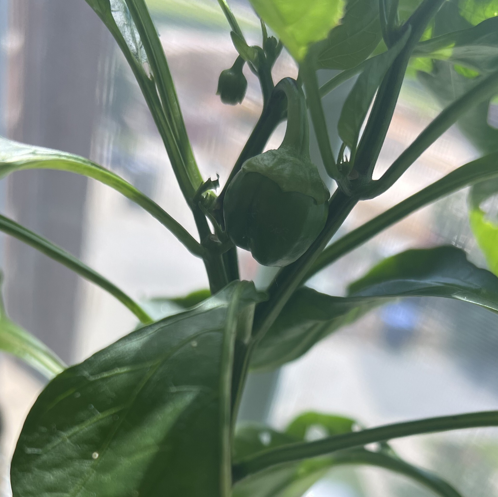
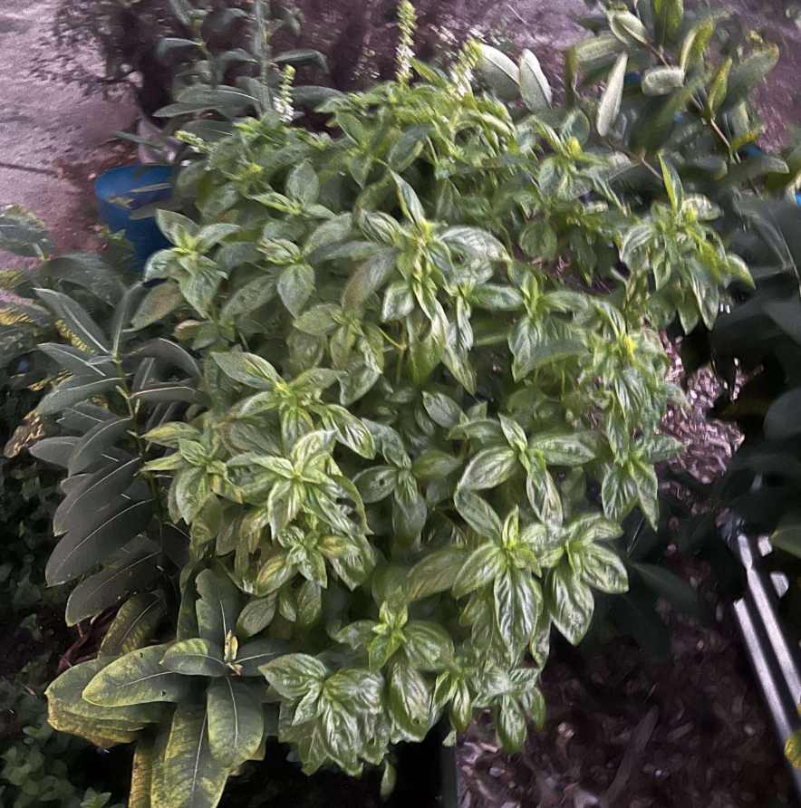

Who Is A Gardener?
A reflection on gardening and the people who do it.

Have you ever had a hobby that you thought sounds nice but not really your cup of tea?
Yeah, that's me, Hanniel, with gardening. I've never had a green thumb, but no one can
deny the therapeutic properties of simply being in nature, and hence, cultivating it around you.
Other people, like my sister, have that green thumb. I remember the techniques she'd use to take care of them,
like grinding eggshells for extra nitrogen in their soil. I loved seeing the plants a little bigger than before,
or a new, healthy sprout when I visited her dorm. Unless otherwise specified (like the photo on the left),
she is the person who took the photos featured in this site, and grew the plants.
I deeply respect gardening as a hobby, and the people who do it, and this site is a tribute to that.
- Hanniel Holness (Honorable Hummingbird)
What Plants Should I Grow?
We all need to start somewhere. Source: Gardening Know How, Longfield Gardens

| Plant | Light | Water |
|---|---|---|
| Begonia | Full/indirect light (3-6 hours daily) | Use ambient humidity - water when the plant needs it (e.g., drooping leaves). |
| Mint | Full/indirect sun (12-16 hours daily) | Regular watering, especially during dry spells. |
| Parsley | Full/indirect sun (6-8 hours daily) | Regular watering, but doesn't tolerate drought/waterlogging - keep water within a perfect range. |
When Do I Plant?
A sample growing schedule for a USDA Zone 8 climate (most of NC). Source: Farmer's Almanac

| Season | Task | Note |
|---|---|---|
| Winter (Jan 24-Feb 7) | Start plants indoors | Plant 2 pepper seeds per seedling cell or 3 per pot. Bury the seeds 1/4-inch deep in seed starting mix. |
| Late spring (Apr 19-26) | Transfer plants outdoors | Wait until the weather warms and then harden plants for 1-2 weeks. Plant peppers in their own pots or 12 to 18-inches apart in rows spaced 2 to 3-feet from each other, and water well. |
| Summer (mid-July) | Harvest | Wait about 12 weeks after you transfer the bell peppers outdoors. Harvest when the bell peppers are firm, large and reach their final color (green, yellow, red, orange, etc.) Use scissors to cut the fruit - don't pull peppers of the stem; this damages the plant. |
Where Should I Plant?
Different areas for growing. Sources: Pella.com, HarvestByHillwood, OneNewHumanityCDC

- South-facing window: Best for providing strong, direct light. However, plants can be vulnerable to temperature changes.
- Community garden bed: Shared composting programs and better microclimates. Disadvantages include disputes/confusion over plant placement.
- Bathroom shelf with humidity: Great humidity balance and air purification. Problems include lack of light and overwatering risk.
NOTE: Keep microclimates in mind; walls, vents, and curtains can change light and airflow.
How Should I Plant a Plant?
Sample bell pepper planting steps with care questions. Source: Farmer's Almanac

- Planting:
- Plant seeds in 1/4-inch deep in seed starting mix.
- Maintain soil at ≥70°F with a heat mat.
- Move the seeds under bright grow lights
- Thin out the weakest seedlings to leave 1 plant per cel or 2 per pot
- Repot the seedlings into bigger containers as needed.
- Watering: Regularly with about 1 to 2-inches of water per week. Allow to nearly dry out between waterings, then water deeply, low and slow.
- Fertilizing: Adding compost to the soil at planting time. Feed bell peppers with tomoto/high potassium fertilizer when they sprout flowers.
Why Should I Grow?
Some reasons for why gardening is fun! Source: My sister

- They Grow! - It's fun to see then grow from a seed, to a leaf, then two, then flowers.
- Food independence: You can grow herbs/fruits for food, and they grow repeatedly.
- Plants are varied: Plants distinguish themselves in different shapes/sizes, but share traits -
you can tell a particular plant family from a feature alone.
- Compare sweet pea flowers to lupin flowers!
"To plant a garden is to believe in tomorrow." - Audrey Hepburn
AI Prompts
AI was only used for page editing/debugging. No AI images used, and proudly.
| AI model | Prompt description |
|---|---|
| Kimi Instant | There are still issues with "When?" and "What?" - you could place the heading (i.e., placeholder plant start table) and table (Plant, Light, Water) into the space DEFINED BY the orange box. DO NOT add the orange outline in the final hobby site. This would make the site fit CRAP (Contrast, Repetition, Alignment, Proximity), design principles better. |
| Claude Sonnet 5.5 (Medium) | Redesign hobby.html so "What?" and "When?" have appropriate spacing, similar to the other sections [that have the correct ordering] - add the "PLACEHOLDER STEPS" for What on the right, and "PLACEHOLDER TIMES" on the right for "When." |
A Note on AI Images
Regardless of how I use AI agents in my software development/cybersecurity career,
there's one area of AI use I will literally never compromise on: Using AI to generate "art" or "photos."
Large language models are ultimately trained on large quantities of data,
and generating images requires models to siphon volumes of copyrighted images.
In other words, AI image generation is based on a poor ethical foundation - stealing.
AI images can, and should never be considered art because they lack the intentionality
associated with creating art. This is what distinguishes AI "art" from non-traditional art
forms such as photography. A photographer intentionally chooses or creates an environment to
take a photograph, and hence, every pixel within the photograph, consciously or subconsciously,
reflects the artist's intent. AI image generation, however, is based on statistical modeling -
the bots guess where the next pixels should be, based on their pilfered training data.
This will be a long tangent, but bear with me. I'm sure there's a movie, TV show, song, or book
you can relate to a lot. For me, that's Fullmetal Alchemist: Brotherhood. That anime changed the way I think.
If you haven't seen FMAB, the show follows two brothers: Edward and Alphonse Elric. Abandoned by their father
and following the death of their mother, the two try to revive their mother through the "science" (read: magic)
of alchemy - which allows you to transfer matter from one form to another, like changing a marble tile into a handy spear.
However, reviving someone from the dead - human transmutation - is strictly forbidden. Driven by grief and naive hope, the
brothers attempt it anyway, leading to Edward losing two of his limbs and Alphonse's soul being sealed in a suit of armor.
Ed, with new "automail" prosthetics, joins the military as a State Alchemist, and the two brothers seek the Philosopher's Stone
- an alchemical relic - while eventually being embroiled in a centuries-long conspiracy, threatening their entire world.
FMAB is one of my favorite pieces of media because of its writing on sacrifice.
Alchemy's central idea - to gain one thing requires an exchange of another thing of equal value
- is a metaphysical law that governs the entire show. And the deliberate progression from just
being about Ed and Al to including more characters and ever-higher stakes, with a VERY long-term conspiracy,
makes the show unforgettable for me. I emphasize intentionality so much because it is a trait (alongside creativity)
that AI cannot replicate. Over millennia, humans have developed an emotional connection to created works
- via oral tradition, written down, filmed, drawn, or animated - because we intuitively know that someone intended
a character or theme to be written this way. We intuitively know (or, for the most part, correctly assume) that
another person intended a work's plot to have a particular set of events.
Subverting those expectations with AI images betrays that expectation and makes a created work less enjoyable.
There's no reason why AI images should be used, given that there are plenty of free, high-quality,
copyright-free images available on Pixabay, Pexels, or Pinterest. Find an image, use TinEye or other
reverse image searching tools to find the artist if that information isn't immediately available, or ask someone you know.
And don't forget to credit the artists.